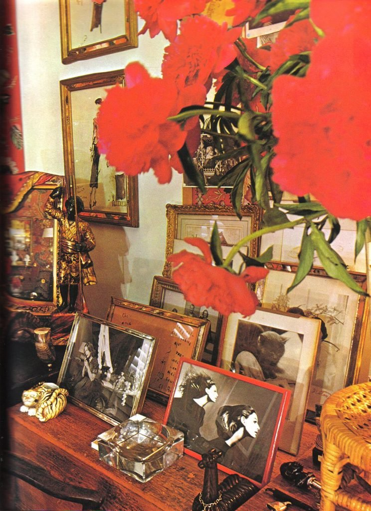
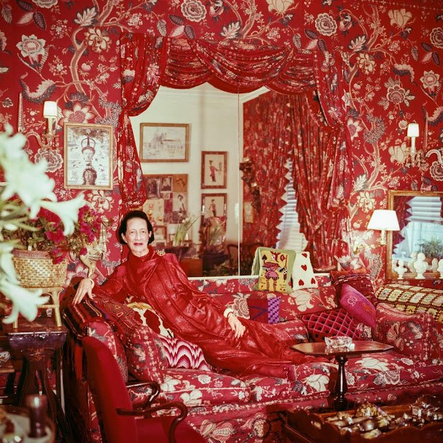
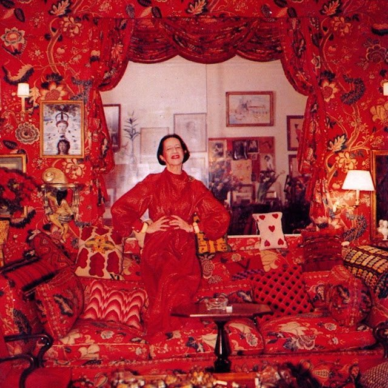
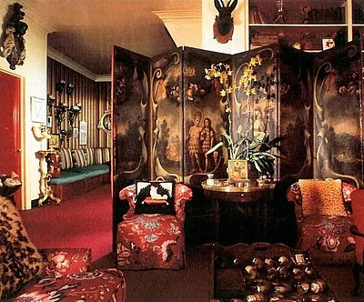
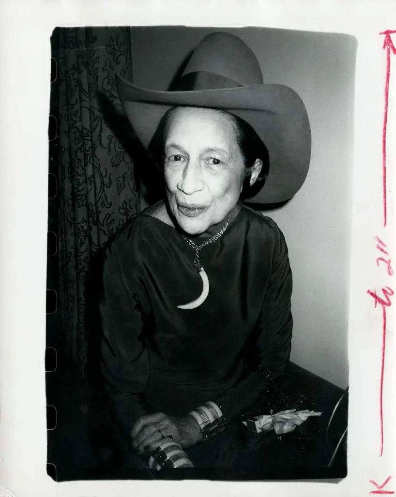
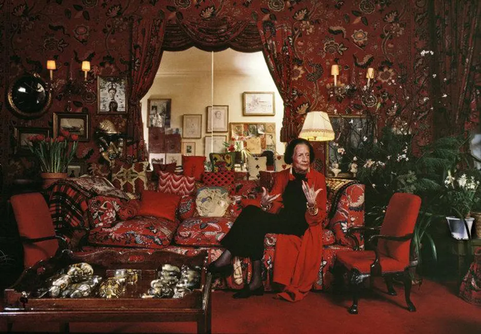

»quiero que mi salón parezca un jardín, pero un jardín en el infierno»
hay frases que te las dicen una vez y ya no te las quitas de encima, como un pelo que se te queda pegado en la lengua y lo buscas con los dedos y no lo encuentras. esta es de diana vreeland, que en 1955 se muda a un piso nuevo en park avenue, llama a billy baldwin, el decorador que todo nueva york quería, y le dice que quiere que su casa parezca un jardín. vale. un jardín. pero un jardín en el infierno.

y baldwin no le dice que está loca. no le dice señora a lo mejor un verde salvia, un crudo, algo que descanse la vista. se va a buscar una tela y encuentra un chintz de colefax & fowler, con flores enormes de inspiración persa sobre fondo rojo escarlata, rojo sangre, rojo de herida recién hecha, y con eso lo forra todo. las paredes, las cortinas, los sofás. todo. no queda un trozo de casa sin flor.
el dijo después que nunca había visto una casa tan de alguien. el beige no es de nadie, lo elige el casero. aquel rojo era de ella, entrabas y lo sabías aunque ella no estuviera.
y luego más rojo encima del rojo. alfombras rojas, puertas lacadas en rojo, los marcos de los cuadros rojos, hasta el forro de dentro de los armarios rojo, para que cuando abras el armario a las siete de la mañana con sueño y con la boca pastosa también te reciba el infierno.

ella venía de harper’s bazaar, donde desde el 36 escribía una columna que se llamaba why don’t you, y por qué no, y ahí soltaba ideas imposibles una detrás de otra, como si la vida normal fuera una cosa que se puede rechazar si una tiene suficiente imaginación. después fue a vogue. y decía que el rojo lo aclara todo, que hace bonitos a todos los demás colores. yo pienso que el rojo también te deja sin escondite. en una habitación roja no te puedes poner gris por dentro, se nota.
lo que me remueve no es el lujo, que también, que era park avenue y no un tercero sin ascensor en carabanchel. es la palabra infierno puesta al lado de la palabra jardín, como si las dos fueran normales juntas. porque a las mujeres siempre nos han dejado el jardín. el jardín bonito, florecitas, regar, cuidar, que todo crezca para otros. y ella coge el jardín y le prende fuego. sin dejar de ser jardín. las flores siguen ahí, solo que ahora huelen a quemado y a perfume caro y a cigarro de una fiesta que acabó a las cuatro.

y eso me da envidia, mucha, de la mala, de la que se te queda en el estómago como un yogur caducado. porque yo me he pasado la vida en casas que no se parecían a mí. la casa de mis padres, que olía a lejía y a lo que hubiera de comer, con las fotos de la comunión en el pasillo y un cuadro de un barco que nadie había elegido. los pisos compartidos, con la nevera dividida por baldas y el pelo de otra en el desagüe de la ducha, ese pelo largo que no es tuyo y lo tienes que sacar igual con dos dedos aguantando la arcada. las habitaciones de alquiler donde no te dejan clavar ni un clavo y cuelgas las cosas con masilla azul que a los tres días se cae de noche y te despierta del susto. ninguna de esas casas era mía. yo era una que estaba de paso dentro de la casa de otro.

y lo que pasa cuando vives años así es que te vas haciendo pequeña para caber. dejas las cosas en la maleta. no compras nada grande porque luego hay que llevarlo. no pintas porque el casero se queda la fianza. y un día te das cuenta de que tú también te has vuelto beige, por dentro, de tanto no molestar.
por eso lo de vreeland me gusta, y no me parece capricho de rica, aunque también lo sea. y el infierno también me gusta. porque en el infierno no hay que portarse bien. ya estás ahí, ya te han condenado, ya no tienes que ganarte nada. puedes sentarte como te dé la gana, comer con las manos, dormir con el maquillaje, no contestar al teléfono. el jardín del paraíso es un jardín donde no se puede tocar la fruta. el del infierno es uno donde ya te la has comido.

y yo a esta mujer la admiro de una manera que me da hasta un poco de vergüenza, como cuando de pequeña te enamoras de la profesora y le copias la letra. porque no era guapa, no en el sentido que te enseñan, tenía la nariz grande y la cara larga y la boca demasiado roja, y le dio igual, o hizo como que le daba igual, que al final es lo mismo si lo haces durante sesenta años. ella vio a lauren bacall cuando nadie sabía quién era, ayudó a que twiggy fuera twiggy, se inventó la palabra youthquake para decir que los jóvenes estaban haciendo temblar el mundo, y luego, ya mayor, cuando la echaron de vogue, en vez de irse a su casa a morirse de pena se fue al metropolitan a montar exposiciones de vestidos como si fueran cuadros. a mí eso me parece lo más. que te echen y tú vayas y te hagas más grande. que no tengas la cara que se supone y te hagas una cara a base de mirar. ella decía que el ojo tiene que viajar, y yo pienso que el suyo no paró nunca, ni dentro de su propia casa, que es donde a las demás se nos para.

os quiero <3